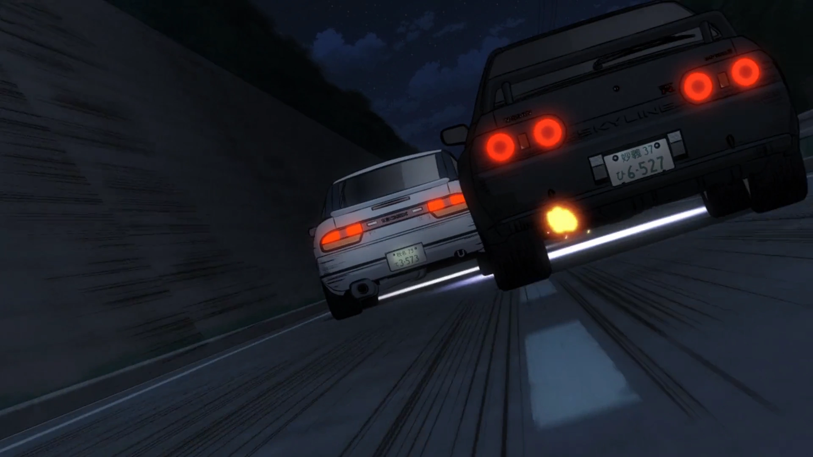

Why Initial D is a Cultural Phenomenon
Initial D isn’t just about cars—it’s about passion, rivalry, and the excitement of speed. It’s the perfect blend of fast-paced action and emotional storytelling that resonates with people worldwide. Its impact goes beyond the screen, influencing real-world car culture, motorsports, and even drifting competitions. The series helped popularize drifting as a motorsport, especially in Japan. Its portrayal of street racing, along with its soundtrack, including iconic Eurobeat tracks, has had a lasting influence on the genre of racing anime and car culture in general.
Explore the Media
- Manga: The Initial D manga is the foundation of the series, offering a deeper dive into the world of street racing, with detailed illustrations of races and car mechanics. It's a must-read for fans who want to explore the story from the beginning.
- Anime Series: The anime adaptation brought the story to life, with intense race scenes and unforgettable moments. With multiple seasons and movies, the anime is the best way to experience the high-speed action.
- Movies: Initial D has been adapted into live-action films and animated movies, offering fans new ways to enjoy the story. Whether you’re a long-time fan or a newcomer, the films are a great way to revisit Takumi’s journey.
- Video Games: The Initial D video games allow players to immerse themselves in the world of street racing. From arcade games to console releases, you can take control of your favorite cars and race through the mountain passes just like Takumi.
Join the Race – Experience Initial D Today!
You haven’t yet experienced Initial D, now is the perfect time to dive in. Whether you’re watching the anime, reading the manga, or playing the games, Initial D is an unforgettable ride. Explore the world of street racing and follow Takumi’s journey as he proves that even the most unlikely heroes can rise to the challenge.
Get Started Today:
Feel the rush, and remember: the race is just getting started.